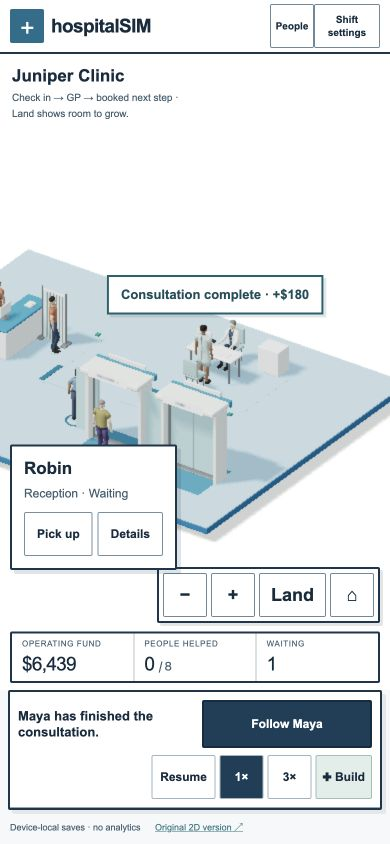
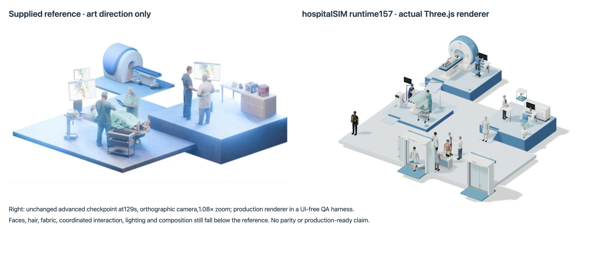

Runtime157 · model1.0.0-rc9 unchanged · November6,2026. Original AI-assisted game engineering for Arjan Singh Puniani. This is a playable iteration, not a production-readiness or reference-parity claim.
New face and hand detail, modeled cloth folds, grounded foot contacts, greeting, waiting, keyboard work and goodbye. Existing room equipment rises and settles when placed. Original dialogue follows actual reception/consultation states in one brief speech bubble. No additional management menu or fabricated clinical outcome.
Exact checkpoint and event log
Native runtime155 browser recording of the same final people/animation assets, game0–90. Build reception and hire Quinn at0; GP at7, Mira hired8. First consultation fee48, Maya exits60. At90:5arrivals =2completed +0departed +3inside. Exact simulation replay matches all actions, fee, wardrobe, visit and counts. Runtime156 additionally fixes reuse of old actor/room visuals when importing another hospital; fresh-play motion is unchanged. Captures actual canvas and local state captions, not HTML menus or sound. Public H.264 copy preserves the original recording’s frame timing; the native VP9 movie is retained in source.
Blender4.0.2 exported35original skinned actors and13motion packages, with editable people_presence.blend / people_motion.blend and reproducible Python scripts. Faces and digits are protected during reduction, clothing gains3–4mm folds and12-ray local shading. Each actor remains one skinned draw primitive with39joints and embedded textures. Old improved gait/chair tracks remain intact. Blender also executed the fitted procedure drape, with editable people_drape.blend and sampled clearance over all eleven resting skins. The cloth lifts while gathering rather than shrinking through the shoes. No downloaded human assets. Original CC0-1.0 work; substantial AI assistance.

390×844 in-app Chromium on AppleM2. Empty start, reception rotation/placement, paid hires, live GP placement, patient follow, completed visits/fees, pickup/put-down, half opacity and green valid landings, pause, reduced motion and paused reload checked. Mobile render profile30fps: one pooled1800frame sample33.02ms mean /34.30ms p95; desktop17.07ms /17.60ms. Inspector, pause and host activity are included: these are not controlled hardware benchmarks. Pickup preparation40.6ms, GP placement19.5ms in that run. Real iPhone/Safari and thermal behavior require the owner’s separate retest.
Opening three-patient/two-staff scene:80,386 main-pass triangles /57calls. Advanced seven-patient/nine-staff scene:238,919 /88calls. Shadow passes can nearly double processed triangles and calls; dense campuses can exceed the provisional budgets. Initial65GLBs:9.59MB gzip measured locally (30.23MB raw), plus2.70MB raw runtime/vendor. Actual server encoding/cache can differ; asset detail costs more than runtime150.

Actual final renderer, unchanged advanced compact checkpoint at129s, paused, orthographic1.08× camera. The source-retained QA harness uses the same production renderer and assets, hiding only HTML controls. The source also retains the full gameplay screenshot. Left reference panel retained from the earlier user-supplied comparison; no reference artwork is used in the game.
The reference still has richer faces/hair, better fabric silhouettes, more convincing ensemble poses, softer integrated lighting and denser intentional composition. Procedural humans, generic bedside work, approximate contact beyond the checked desks, rigid queues and the sparse empty estate remain. This does not establish commercial-game-quality fun, learning benefit, accessibility conformance or production readiness.
All34canonical game check files passed, plus a new exact native recording replay. New skin/motion tests check preserved gait/chair tracks, planted standing feet, actual skinned keyboard fingertips, embedded textures, original dialogue/reduced reveal and clearing reused IDs when replacing state. Portfolio34files /301assertions, typecheck and production build passed. Local QA initially hit a server request-backlog failure; it was fixed and clean final-load console checks are recorded separately.
Editable sources, asset provenance, tests and evidence · Unperformed evaluation protocol. No clinician/educator review or learner study occurred. Local saves only; no gameplay analytics.